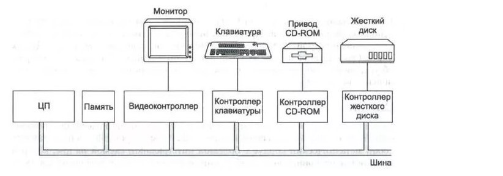
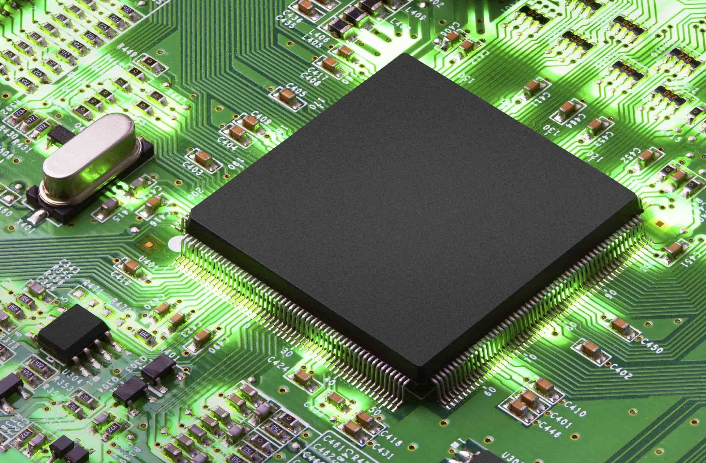

Введение: Любой, самый примитивный компьютер – сложнейшее техническое устройство. Но даже такое сложное устройство состоит их простейших элементов. Любой электронный логический блок компьютера состоит из десятков и сотен тысяч вентилей (логических схем), объединяемых по правилам и законам (аксиомам) алгебры вентилей в схемы. Логический элемент компьютера представляет собой часть электронной схемы, реализующий элементарную логическую функцию. Логический элемент компьютера — это часть электронной логичеcкой схемы, которая реализует элементарную логическую функцию.
Если рассмотреть микросхему при сильном увеличении, то она поразит нас своей стройной архитектурой. Чтобы понять, как она работает, вспомним, что компьютер работает на электричестве, т.е. любая информация представлена в компьютере в виде электрических импульсов. Логические элементы компьютера оперируют с сигналами, представляющими собой электрические импульсы. Есть импульс – значение сигнала 1, нет импульса значение-0
 Схемы Правило построения логических схем Заключение